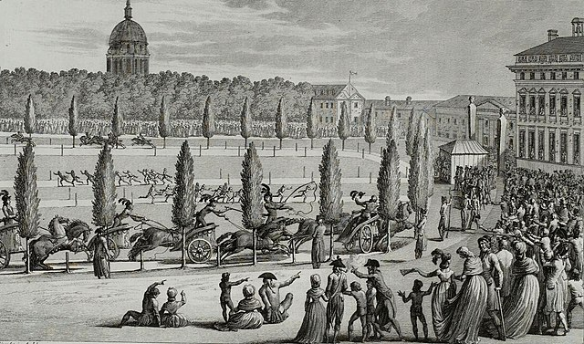

Os Jogos Olímpicos são um evento multiesportivo global com modalidades de verão e de inverno, em que milhares de atletas participam de várias competições.
Atualmente os Jogos são realizados a cada dois anos, em anos pares, com os Jogos Olímpicos de Verão e de Inverno se alternando, embora ocorram a cada quatro anos no âmbito dos respectivos Jogos sazonais.
Originalmente, os Jogos Olímpicos da Antiguidade foram realizados em Olímpia, na Grécia, do século VIII a.C. ao século V d.C.
No século XIX, o Barão Pierre de Coubertin fundou o Comitê Olímpico Internacional (COI) em 1894.
O COI se tornou o órgão dirigente do Movimento Olímpico, cuja estrutura e as ações são definidas pela Carta Olímpica.
Origem
Os Jogos Olímpicos antigos foram uma série de competições realizadas entre representantes de várias cidades-estado da Grécia antiga, que caracterizou principalmente eventos atléticos, mas também de combate e corridas de bigas.
A origem destes Jogos Olímpicos é envolta em mistério e lendas. Um dos mitos mais populares identifica Hércules e Zeus, seu pai, como os progenitores dos Jogos.
Segundo a lenda, foi Hércules que primeiro chamou os Jogos "Olímpicos" e estabeleceu o costume de explorá-los a cada quatro anos.
A lenda persiste que, após Hércules ter completado seus doze trabalhos, ele construiu o estádio Olímpico como uma honra a Zeus.
Após sua conclusão, ele andou em linha reta 200 passos e chamou essa distância de estádio (em grego: στάδιον, latim: stadium, "palco"), que mais tarde tornou-se uma unidade de distância.
Outro mito associa os primeiros Jogos com o antigo conceito grego de trégua olímpica (ἐκεχειρία, ekecheiria).
A data mais aceita para o início dos Jogos Olímpicos antigos é 776 a.C, que é baseada em inscrições, encontradas em Olímpia, dos vencedores de uma corrida a pé realizada a cada quatro anos a partir de 776 a.C.
Os Jogos Antigos destacaram provas de corrida, pentatlo (que consiste em um evento de saltos, disco e lança-dardo, uma corrida a pé e luta), boxe, luta livre e eventos equestres.
Diz a tradição que Coroebus, um cozinheiro da cidade de Elis, foi o primeiro campeão olímpico.
Os Jogos Olímpicos chegaram ao seu apogeu entre os séculos VI e V a.C, mas, depois, perderam gradualmente em importância enquanto os romanos ganharam poder e influência na Grécia.
Segundo alguns autores, o declínio do espírito olímpico não se inicia no período romano e sim no período helenístico.
Uma das causas mais importantes para se compreender esse declínio é a mudança do status de cidadão/soldado para súdito (soldado/profissional ou atleta/profissional).
Dessa forma o profissionalismo se realizou como efeito da mudança política e não como a própria causa das mudanças ocorridas do período clássico para o helenístico.
Não há consenso sobre quando os Jogos terminaram oficialmente; a data mais comum, é 393 d.C, quando o imperador Teodósio I declarou que todas as práticas e cultos pagãos seriam eliminados.
Outra data é 426 d.C, quando seu sucessor Teodósio II ordenou a destruição de todos os templos gregos. Os Jogos Olímpicos não voltaram a ser realizados novamente até o final do século XIX.
Os Jogos da Era Moderna
Precursores
A primeira tentativa significativa de trazer de volta os antigos Jogos Olímpicos foi a L'Olympiade de la République, um festival olímpico nacional realizado anualmente de 1796 a 1798 na França revolucionária.
A iniciativa foi dada pelo deputado Charles-Gilbert Romme que foi guilhotinado um ano antes de sua realização.
A competição incluiu várias modalidades dos antigos Jogos Olímpicos Gregos.
Os Jogos de 1796 também marcaram a introdução do sistema métrico no esporte.

Olimpíada da República em 22 de Setembro de 1796, (Museu da Revolução Francesa)
Em 1850 uma Olympian Class foi iniciada pelo Dr. William Penny Brookes em Much Wenlock, Shropshire, Inglaterra, para melhorar a aptidão dos locais.
Em 1859, o Dr. Brookes renomeou Olympian Class para Jogos Anuais da Sociedade Olímpica de Wenlock e estes jogos anuais continuam até hoje.
A Sociedade Olímpica de Wenlock foi fundada pelo Dr. Brookes em 15 de novembro de 1860.
Entre 1862 e 1867, Liverpool realizou todos os anos um Grand Olympic Festival. Idealizado por John Hulley e Melly Charles, esses jogos foram os primeiros a serem totalmente amadores em sua natureza e de perspectiva internacional.
O programa da primeira Olimpíada moderna, em Atenas, em 1896 foi quase idêntico ao dos Jogos Olímpicos de Liverpool.
Em 1865, Hulley, o Dr. Brookes e E.G. Ravenstein fundaram a Associação Nacional Olímpica em Liverpool, precursora da Associação Olímpica Britânica.
Seus artigos de fundação forneceram a estrutura para a Carta do Comitê Olímpico Internacional.
Renascimento
O interesse grego em reviver os Jogos Olímpicos começou com a guerra de independência da Grécia do Império Otomano em 1821.
Foi proposto pela primeira vez pelo poeta e editor de jornal Panagiotis Soutsos em seu poema Diálogo dos Mortos, publicado em 1833.
Evangelis Zappas, um rico filantropo grego, escreveu pela primeira vez ao Rei Oto da Grécia, em 1856, ofertando fundos para financiar o renascimento permanente dos Jogos Olímpicos.
Zappas patrocinou os primeiros Jogos Olímpicos em 1859, que foram realizados na cidade de Atenas.
Participaram atletas da Grécia e do Império Otomano. Zappas financiou a restauração do antigo Estádio Panathinaiko para que pudesse acolher todos os futuros Jogos Olímpicos.
Dr. William Penny Brookes adotou os eventos do programa dos Jogos Olímpicos realizados em Atenas em 1859, no futuro Jogos Olímpicos de Wenlock.
Em 1866, foi realizada uma olimpíada nacional na Grã-Bretanha organizada pelo Dr. Brookes no The Crystal Palace de Londres.
O Estádio Panathinaiko sediou Jogos Olímpicos em 1870 e em 1875.
Trinta mil espectadores lotaram o estádio e seu entorno em 1870 — maior do que quase todo o público nos Jogos Olímpicos da era moderna de 1900 a 1920.
Em 1890, depois de assistir os Jogos Anuais da Sociedade Olímpica de Wenlock, o Barão Pierre de Coubertin se inspirou em fundar o Comitê Olímpico Internacional.
Coubertin se baseou nas ideias e no trabalho de Brookes e Zappas com o objetivo de estabelecer rotação internacional aos Jogos Olímpicos e que ocorreriam a cada quatro anos.
Ele apresentou essas ideias durante o primeiro Congresso Olímpico do recém-criado Comitê Olímpico Internacional. Esta reunião foi realizada de 16 a 23 junho de 1894, na Sorbonne, em Paris.
No último dia do congresso, foi decidido que os primeiros Jogos Olímpicos, a entrar sob os auspícios do COI, teria lugar dois anos mais tarde, em Atenas.
O COI elegeu o escritor grego Dimítrios Vikélas como seu primeiro presidente.
Atenas 1896
Cerimônia de abertura dos Jogos Olímpicos de Verão de 1896 no Estádio Panathinaiko em Atenas, Grécia
Os primeiros jogos sob os auspícios do COI foram sediados no Estádio Panathinaiko em Atenas, em 1896.
Estes jogos trouxeram 14 nações e 241 atletas que competiram em 43 eventos.
Zappas e seu primo Konstantinos Zappas tinham deixado ao governo grego uma relação de confiança para financiar os futuros Jogos Olímpicos.
Esta confiança foi fundamental para o financiamento dos Jogos de 1896. George Averoff contribuiu generosamente para a renovação do estádio Panathinaiko para os Jogos.
O governo grego também financiou a reforma por meio da venda futura de ingressos e com a venda do primeiro conjunto de selos comemorativos.
Os funcionários e o povo grego estavam entusiasmados com a experiência de sediar os Jogos.
Este sentimento era partilhado por muitos dos atletas, que ainda pediram que Atenas fosse a anfitriã dos Jogos Olímpicos permanentemente.
O COI não aprovou este pedido. O comitê previa que os Jogos Olímpicos modernos girassem internacionalmente. Como tal, decidiu realizar os segundos Jogos em Paris.
Comitê Olímpico Internacional
Quartel General do COI em Lausanne, Suíça
O Movimento Olímpico abrange um grande número de organizações desportivas nacionais e internacionais e federações, reconhecido parceiros de mídia, bem como atletas, dirigentes, juízes e qualquer outra pessoa e instituição que concorda em obedecer às regras da Carta Olímpica.
Como a organização de cúpula do Movimento Olímpico, o Comitê Olímpico Internacional (COI) é responsável por selecionar a cidade sede, supervisionando o planejamento dos Jogos Olímpicos, a atualização e aprovação do programa de esportes, e negociação de patrocínios e direitos de transmissão.
O Movimento Olímpico é constituído por três elementos principais:
Federações Internacionais (FIs) são os organismos que regem a supervisão de um desporto a nível internacional.
Por exemplo, a Federação Internacional de Futebol (FIFA) é a FI para o futebol, e a Federação Internacional de Voleibol (FIVB) é o órgão internacional do voleibol.
Existem atualmente 35 FIs no Movimento Olímpico, representando cada um dos esportes olímpicos.
Comitês Olímpicos Nacionais (CONs) representam e regulam o Movimento Olímpico em cada país.
Por exemplo, o Comitê Olímpico dos Estados Unidos (USOC) é o CON dos Estados Unidos. Existem atualmente 206 CONs reconhecidos pelo COI.
Comitês de Organização dos Jogos Olímpicos (OCOGs) constituem as comissões temporárias responsáveis pela organização de uma edição específica dos Jogos Olímpicos.
OCOGs são dissolvidos após cada edição dos Jogos, uma vez que o relatório final é entregue ao COI.
O idioma francês e o inglês são as línguas oficiais do movimento olímpico. A língua utilizada em cada edição dos Jogos Olímpicos é a língua do país de acolhimento.
Cada anúncio (como a entrada de cada país durante o desfile das nações na cerimônia de abertura, por exemplo) é falado nestas três línguas, ou as duas principais consoante o país de acolhimento seja um país de língua inglesa ou francesa.
Símbolos
A Bandeira Olímpica
O Movimento Olímpico utiliza símbolos para representar os ideais consagrados na Carta Olímpica.
O símbolo olímpico mais conhecido, os anéis olímpicos, é composto por cinco anéis entrelaçados representando a união dos cinco continentes habitados (considerando as Américas do Norte e do Sul como um continente único).
A versão colorida dos anéis, azul, amarelo, preto, verde e vermelho sobre um fundo branco, forma a bandeira olímpica.
As cores foram escolhidas porque cada nação tinha pelo menos uma delas em sua bandeira nacional. A bandeira foi adotada em 1914, mas foi hasteada pela primeira vez apenas em 1920 nos Jogos Olímpicos de Antuérpia, na Bélgica.
Desde então, é hasteada em cada celebração dos Jogos e em ações relacionadas ao COI.
O lema olímpico é "Citius, Altius, Fortius", uma expressão latina que significa "mais rápido, mais alto, mais forte".
Os ideais de Coubertin são melhores expressos no juramento olímpico:
A coisa mais importante nos Jogos Olímpicos não é vencer, mas participar, assim como a coisa mais importante na vida não é o triunfo, mas a luta.
O essencial não é ter vencido, mas ter lutado bem.
Meses antes de cada edição dos Jogos, a chama olímpica é acesa em Olímpia, em uma cerimônia que reflete antigos rituais gregos.
A performista, atuando como uma sacerdotisa, acende uma lanterna colocando-a dentro de um espelho parabólico que concentra os raios do sol; ela, em seguida, acende as luzes da tocha do primeiro portador, iniciando assim o revezamento da tocha olímpica que vai levar a chama ao estádio olímpico da cidade anfitriã dos Jogos, onde desempenha um papel importante na cerimônia de abertura.
Embora o fogo seja um símbolo olímpico desde 1928, o revezamento da tocha foi introduzido nos Jogos Olímpicos de Verão de 1936 como parte da tentativa do governo alemão para promover a sua ideologia nazista.
O mascote olímpico, um animal ou uma figura humana que representa o patrimônio cultural do país anfitrião, foi introduzido em 1968.
Ele desempenhou um papel importante na promoção da identidade dos Jogos desde, especialmente nos Jogos Olímpicos de Verão de 1980, quando o filhote de urso russo Misha atingiu o estrelato internacional.
Cerimônias
Abertura
A cena da cerimônia de abertura dos Jogos Olímpicos de Verão de 1984 em Los Angeles
Conforme estipulado pela Carta Olímpica, vários elementos enquadram a cerimônia de abertura dos Jogos Olímpicos.
A maioria destes rituais foram criados em 1920 nos Jogos Olímpicos de Antuérpia.
A cerimônia tipicamente começa com o hastear da bandeira do país anfitrião e uma performance de seu hino nacional. O país anfitrião, em seguida, apresenta manifestações artísticas de música, canto, dança e representação teatral de sua cultura.
As apresentações artísticas têm crescido em dimensão e complexidade na tentativa das cidades-sedes de fornecer uma cerimônia que supere sua antecessora em termos de memorização.
A cerimônia de abertura dos Jogos de Pequim custou 100 milhões de dólares, com parte dos custos suportados no segmento artístico.
Após a parte artística da cerimônia, é realizado o desfile de atletas para o estádio agrupados por país.
A Grécia é tradicionalmente a primeira nação a entrar com o intuito de honrar as origens dos Jogos Olímpicos.
Das nações, em seguida, entram no estádio em ordem alfabética de acordo com o idioma do país-sede, com os atletas deste sendo os últimos a entrarem.
Durante as Olimpíadas de 2004, que foram realizados em Atenas, na Grécia, a bandeira grega abriu o desfile das nações e a delegação do país encerrou o mesmo.
Discursos são dados, formalmente abrindo os Jogos. Finalmente, a tocha olímpica é levada para o estádio e é passada de mão em mão até chegar ao portador final da tocha, muitas vezes um bem conhecido e bem sucedido atleta olímpico da nação anfitriã, que acende a chama olímpica na pira do estádio.
Encerramento
Atletas se reúnem no estádio durante a cerimônia de encerramento dos Jogos Olímpicos de 2008
A cerimônia de encerramento dos Jogos Olímpicos ocorre após todos os eventos desportivos terem sido concluídos.
Porta-bandeiras de cada país participante entram no estádio, seguidos pelos atletas que entram juntos, sem qualquer distinção nacional.
Três bandeiras nacionais são hasteadas enquanto os hinos nacionais correspondentes são tocados: a bandeira da Grécia, para homenagear o berço dos Jogos Olímpicos, a bandeira do país anfitrião, e a bandeira do país dos próximos Jogos Olímpicos.
O presidente do comitê organizador e presidente do COI fazem seus discursos de encerramento, os Jogos são oficialmente encerrados, e a chama olímpica é apagada.
Na Cerimônia de Antuérpia, o prefeito da cidade que organizou os Jogos Olímpicos transfere uma bandeira olímpica especial ao presidente do COI, que depois a passa para o prefeito da cidade anfitriã dos próximos Jogos Olímpicos.
Após estes elementos obrigatórios, o país anfitrião seguinte apresenta-se brevemente com exposições artísticas de dança e teatro representante de sua cultura.
Entrega de Medalhas
Uma cerimônia de medalhas durante os Jogos Olímpicos de Verão de 2008
A cerimônia de entrega de medalha é realizada após a realização de cada evento olímpico.
O vencedor, segundo e terceiro lugar, sendo competidores individuais ou equipes, sobem no alto de uma tribuna em três níveis e são atribuídas suas respectivas medalhas.
Após as medalhas serem distribuídas por um membro do COI, as bandeiras nacionais dos três medalhistas são levantadas enquanto o hino nacional do país do medalhista de ouro é executado.
Cidadãos voluntários do país-sede também atuam como anfitriões durante a cerimônia de medalhas, já que ajudam os funcionários a entregarem as medalhas e atuam como porta-bandeiras.
Para cada modalidade olímpica, a respectiva cerimônia de medalhas é realizada, no máximo, um dia depois do final do evento. Para a maratona masculina, a competição é normalmente realizada no início da manhã do último dia de competição olímpica e a sua cerimônia de medalhas, em seguida, é realizada à noite durante a cerimônia de encerramento.
Nas Olimpíadas de 2020, as medalhistas da maratona feminina também foram premiadas na cerimônia de encerramento, como parte da política de igualdade de gêneros.
Esportes
Prova de atletismo nos Jogos Olímpicos de 1996
O programa dos Jogos Olímpicos consiste de 26 esportes, 30 disciplinas e cerca de 300 provas. Por exemplo, a luta é um esporte dos Jogos Olímpicos de Verão que inclui duas disciplinas: greco-romana e livre.
É dividido em provas para homens e mulheres, cada um representando uma classe de peso.
Os Jogos Olímpicos de Verão inclui 26 programas esportivos, enquanto os Jogos Olímpicos de Inverno apresentam quinze programas esportivos.
Atletismo, natação, esgrima e ginástica artística são os únicos esportes de verão que nunca estiveram ausentes do programa olímpico.
Esqui cross-country, patinação artística, hóquei no gelo, combinado nórdico, salto de esqui e patinação de velocidade estiveram em todas as Olimpíadas de Inverno desde a criação em 1924. Outros esportes olímpicos, como badminton, basquetebol e voleibol, apareceram primeiro no programa como esportes de demonstração e depois foram selecionados ao programa oficial dos esportes olímpicos. Alguns esportes que foram destaques em jogos anteriores foram retirados do programa.
Os esportes olímpicos são governados pelas Federações Internacionais (FIs), reconhecido pelo COI como os supervisores dos esportes globais. Há 35 federações representadas no COI.
Não são reconhecidos pelo COI esportes que não estão incluídos no programa olímpico.
Estes não são considerados esportes olímpicos, mas podem ser promovidos a este status durante uma revisão do programa que ocorre após a primeira sessão do COI, em comemoração dos Jogos Olímpicos.
Durante tais revisões, esportes podem ser excluídos ou incluídos no programa, com base em uma maioria de dois terços dos membros do COI.
Há esportes reconhecidos que nunca estiveram em um programa olímpico, incluindo xadrez e surfe.
Em outubro e em novembro de 2004 o COI estabeleceu uma comissão do programa olímpico, que foi encarregada de analisar o esporte no programa olímpico e todos os esportes não-olímpicos reconhecidos.
Era o objetivo para aplicar a abordagem sistemática à criação do programa olímpico para cada celebração dos Jogos.
A Comissão formulou sete critérios para julgar se um esporte deve ser incluído no programa olímpico.
Estes critérios são a história e a tradição do esporte, a universalidade, a popularidade do esporte, a imagem, a saúde dos atletas, o desenvolvimento da Federação Internacional que rege o esporte e os custos de exploração do esporte.
A partir deste estudo de cinco esportes reconhecidos surgiram como candidatos para inclusão nas Olimpíadas de 2012 o golfe, caratê, rugby, squash e patinação sobre rodas.
Esses esportes foram revistos pelo Conselho Executivo do COI e, então, encaminhada para a sessão geral em Singapura, em julho de 2005. Dos cinco esportes recomendados para a inclusão apenas dois foram selecionados como finalistas: caratê e squash.
Nenhum esporte alcançou dois terços de votos necessários e, consequentemente, não foram selecionados para o programa olímpico.
Em outubro de 2009, o COI elegeu o golfe e o rugby como esportes olímpicos para os Jogos Olímpicos de 2016 e 2020.
Na 114ª Sessão do COI, em 2002, o programa dos Jogos Olímpicos foi limitado a um máximo de 28 esportes, 301 eventos e 10 500 atletas.
Três anos mais tarde, na 117ª Sessão, a primeira grande revisão do programa foi realizada, o que resultou na exclusão do beisebol e softbol do programa oficial dos Jogos de Londres 2012.
Como não houve acordo para a promoção de dois outros esportes, o programa de 2012 contou com apenas 26 esportes.
Os Jogos de 2016 e 2020 voltariam a ter o máximo de 28 esportes, com a adição do rugby sevens e golfe.
Posteriormente para 2020 foram incluídos o basquete 3x3, caratê, ciclismo BMX estilo livre, escalada esportiva (anteriormente testado nas Olimpíadas da Juventude de 2018), skate e surfe, além do retorno do beisebol/softbol.
Para 2024, foi incluído o breaking (testado nas Olimpíadas da Juventude de 2018) e retirado o beisebol/softbol e o caratê.